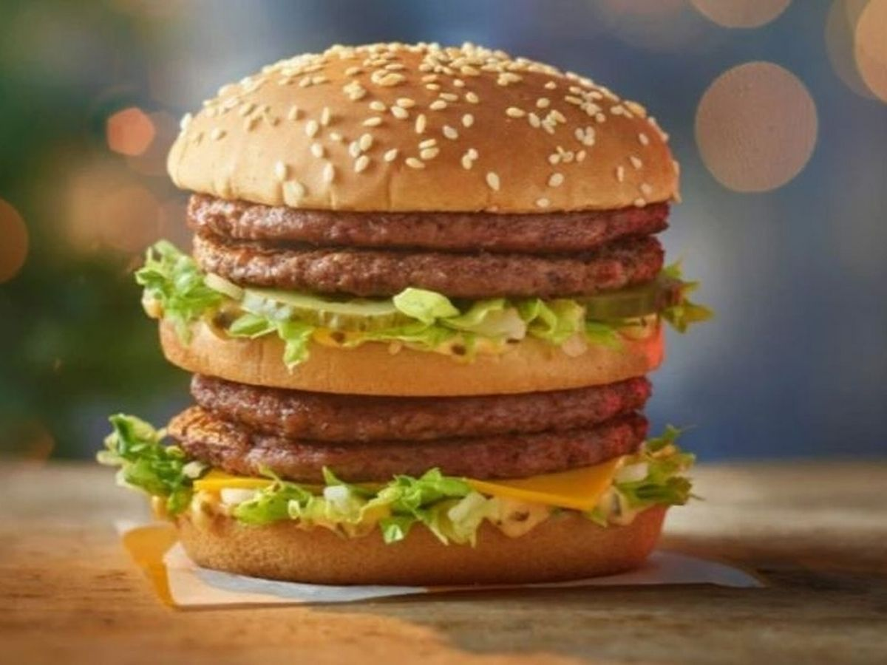

BIG MAC

The Big Mac is a hamburger consisting of two 1.6 oz (45.4 g) beef patties, Iceberg lettuce, American cheese, pickles, chopped onions and special Mac Sauce (a Thousand Island dressing variant, though the recipe remains a secret) served on a three part sesame seed bun.
Ingredients
- Buns
- Burger Patties
- Tomatoes
- Lettuce
- Seeds
- Ketchup
- Mustard
- Pickle
- Onions
- American Cheese
Steps
- Add sauce to the buns
- Put in pattie no1
- Add cheese
- Add onions, lettuce, tomatoes
- Add sauce
- Add bun no2
- Add pattie no2
- More onions, lettuce and tomatoes
- More Sauce
- Add final bun